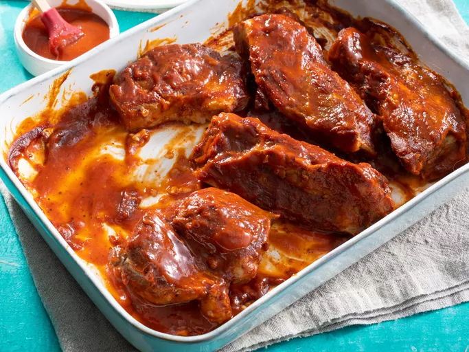

Simple BBQ ribs

Simple as pie
Ribs are quite versatile, so you can serve them with just about any side.
Ingredients
- Two and a half pounds country-style pork ribs
- 2 tablespoons kosher salt
- 1 tablespood garlic powder
- 1 tablespoon ground black pepper
- 1 cup barbeque sauce
Preperation
- Step 1 Gather all ingredients.
- Step 2 Place ribs in a large pot and cover with water. Stir in kosher salt, garlic powder, and pepper, and bring water to a boil over medium heat. Continue to boil until ribs are tender, 40 to 45 minutes.
- Step 3 While the ribs are boiling, preheat the oven to 325 degrees F (165 degrees C).
- Step 4 Remove ribs from the pot, and place them in a 9x13-inch baking dish. Pour barbeque sauce over ribs. Cover the baking dish with aluminum foil.
- Step 5 Bake in the preheated oven until the internal temperature of the pork has reached 160 degrees F (70 degrees C), 1 to 1 1/2 hours.
- Step 6 Serve hot and enjoy!